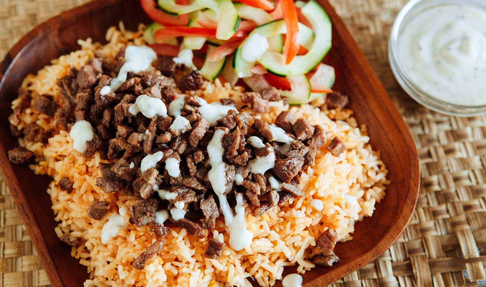

Shawarma Rice Recipe

Description
This Pinoy Shawarma Recipe combines the Middle Eastern influences of shawarma with the preferences of the Filipino.
Ingredients:
- 2 cups long grain rice, jasmine or basmati
- 2 cups water
- ¼ cup margarine
- ½ tsp kasubha
- 500 g beef sirloin, tapa cut
- ¼ cup soy sauce
- 2 tbsp brown sugar
- 1 tsp garlic powder
- ½ tsp black pepper
- birds eye chili, optional
- 1 cucumber, seeded, halved & sliced thinly
- 4 tomatoes, seeded, sliced
- 1 small tub yogurt (125ml)
- ¼ tsp garlic powder
- ¼ tsp fresh garlic, minced
- ⅛ tsp salt
Steps:
- In a bowl, marinate beef in soy sauce, brown sugar, garlic powder and black pepper for 20 minutes or overnight.
- Rinse rice, put in a rice cooker together with water, margarine and kasubha. Cook rice as you would. Once cooked, fluff rice to distribute color. Set aside and keep warm.
- Toss cucumber salad ingredients together in a bowl, serve on the side of shawarma rice.
- Combine all ingredients and keep in chiller until ready to use.
- Pan fry marinated tapa in oil until browned. Chop into pieces.
- To assemble, put rice on plate, cucumber salad on the side. Top minced tapa over rice.
- Drizzle garlic yogurt sauce all over the beef & rice. Serve with more garlic sauce on the side. Enjoy.
Homepage